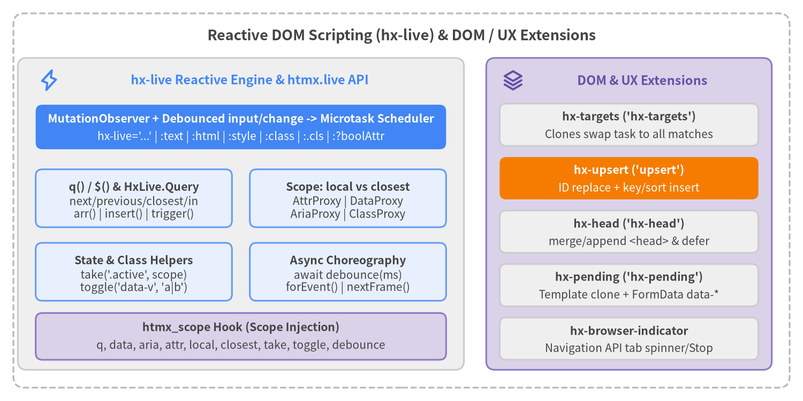

Reactive Scripting & DOM UX Extensions
htmx v4.0.1 includes hx-live (htmx.live) for fine-grained DOM-native reactive expressions, state proxies, and async UI choreography, alongside five specialized DOM & UX extensions (hx-targets, hx-upsert, hx-head, hx-pending, hx-browser-indicator) for multi-target swaps, keyed sorted upserts, <head> synchronization, optimistic pending placeholders, and native browser tab loading indicators.
| Symbol | Registration / Namespace | Source File | Category | Primary Role |
|---|---|---|---|---|
hx-live |
'hx-live' |
src/ext/hx-live.js |
Reactive Scripting | Reactive effect attribute (hx-live) and :attr / hx-live:attr bindings driven by MutationObserver and debounced input/change events. |
q / $ |
htmx.live.q / $ |
src/ext/hx-live.js |
Reactive Scripting | Extended DOM selector query supporting directional (next, previous, closest, first, last) and in scoping. |
HxLive.Query |
q(...) return type |
src/ext/hx-live.js |
Reactive Scripting | Multi-element proxy with state bags (attr, data, aria, class), DOM helpers (take, toggle, trigger, insert), array methods, and property passthrough. |
HxLive.Scope |
local / closest |
src/ext/hx-live.js |
Reactive Scripting | Element-local (local) vs. DOM-cascading (closest) state bags (attr, data, aria, class). |
HxLive.AttrProxy |
attr.* |
src/ext/hx-live.js |
Reactive Scripting | Typed attribute proxy for boolean, property-bound (value, checked), numeric, data-*, and aria-* attributes. |
HxLive.DataProxy |
data.* |
src/ext/hx-live.js |
Reactive Scripting | JSON-parsed data-* proxy with automatic camelCase to kebab-case mapping and ancestor cascading. |
HxLive.AriaProxy |
aria.* |
src/ext/hx-live.js |
Reactive Scripting | Typed WAI-ARIA 1.2 state proxy for booleans, tristates, tokens, numbers, and ID reference arrays. |
HxLive.ClassProxy |
class.* / attr.class |
src/ext/hx-live.js |
Reactive Scripting | Boolean class property access (class.open = true) and multi-element assign, add, remove, toggle, replace, contains. |
take |
htmx.live.take |
src/ext/hx-live.js |
Reactive Scripting | Moves a class (.cls), aria-* state, or attribute from sibling/scoped elements onto target element(s). |
toggle |
htmx.live.toggle |
src/ext/hx-live.js |
Reactive Scripting | Toggles or cycles a class, aria-* state, or attribute through a list of values. |
debounce |
htmx.live.debounce |
src/ext/hx-live.js |
Reactive Scripting | Awaitable Promise or callback debounce that cancels superseded executions. |
refresh |
htmx.live.refresh |
src/ext/hx-live.js |
Reactive Scripting | Schedules an immediate microtask recomputation of all active hx-live expressions. |
forEvent |
htmx.live.forEvent |
src/ext/hx-live.js |
Reactive Scripting | Races event names, millisecond timeouts, interval strings, and custom EventTargets. |
nextFrame |
htmx.live.nextFrame |
src/ext/hx-live.js |
Reactive Scripting | Returns a Promise that resolves on the next requestAnimationFrame tick. |
hx-targets |
'hx-targets' |
src/ext/hx-targets.js |
DOM & UX | Clones and swaps the main response fragment into all elements matching the hx-targets selector. |
hx-upsert |
'upsert' |
src/ext/hx-upsert.js |
DOM & UX | Updates existing elements by id in-place and inserts new elements with optional key:<attr> and sort/sort:desc. |
hx-head |
'hx-head' |
src/ext/hx-head.js |
DOM & UX | Merges or appends <head> tags, awaits blocking stylesheets/scripts, and defers defer scripts until after swap. |
hx-pending |
'hx-pending' |
src/ext/hx-pending.js |
DOM & UX | Clones a <template> or element during in-flight requests, populates data-* from request params, and cleans up on swap/error. |
hx-browser-indicator |
'browser-indicator' |
src/ext/hx-browser-indicator.js |
DOM & UX | Uses the Navigation API (event.intercept()) to display the native browser tab spinner and wire the Stop button to abort(). |

Source Code
from drawlib.canvas import save, setup
from drawlib.icons import phosphor
from drawlib.lines import line
from drawlib.shapes import rectangle
from drawlib.styles import Styles
from drawlib.text import text
setup(width=180, height=90, dpi=150)
# Outer frame
rectangle((90, 45), width=174, height=84, style=Styles.MutedDashed.patch(shape_r=2.5))
text(
(90, 82.0),
"Reactive DOM Scripting (hx-live) & DOM / UX Extensions",
style=Styles.DarkBold.patch(text_size=13.0),
)
# Left Panel: hx-live & htmx.live Engine
rectangle((54, 42), width=100, height=70, style=Styles.Neutral.patch(shape_r=2.0))
phosphor.lightning((11, 72), width=4.8, style=Styles.PrimaryBold)
text((56, 72), "hx-live Reactive Engine & htmx.live API", style=Styles.PrimaryBold.patch(text_size=11.2))
# Scheduler Bar (Focal Point 1)
rectangle((54, 61.5), width=92, height=10, style=Styles.PrimaryFlat.patch(shape_r=1.5))
text((54, 63.3), "MutationObserver + Debounced input/change -> Microtask Scheduler", style=Styles.WhiteBold.patch(text_size=10.2))
text((54, 59.3), "hx-live='...' | :text | :html | :style | :class | :.cls | :?boolAttr", style=Styles.White.patch(text_size=10.0))
# Query & Proxies Grid (2x2 inside Left Panel)
rectangle((30, 45.5), width=44, height=13, style=Styles.PrimaryNeutral.patch(shape_r=1.5))
text((30, 48.0), "q() / $() & HxLive.Query", style=Styles.DarkBold.patch(text_size=10.2))
text((30, 43.3), "next/previous/closest/in\narr() | insert() | trigger()", style=Styles.Dark.patch(text_size=10.0))
rectangle((78, 45.5), width=44, height=13, style=Styles.PrimaryNeutral.patch(shape_r=1.5))
text((78, 48.0), "Scope: local vs closest", style=Styles.DarkBold.patch(text_size=10.2))
text((78, 43.3), "AttrProxy | DataProxy\nAriaProxy | ClassProxy", style=Styles.Dark.patch(text_size=10.0))
rectangle((30, 29.0), width=44, height=13, style=Styles.PrimaryNeutral.patch(shape_r=1.5))
text((30, 31.5), "State & Class Helpers", style=Styles.DarkBold.patch(text_size=10.2))
text((30, 26.8), "take('.active', scope)\ntoggle('data-v', 'a|b')", style=Styles.Dark.patch(text_size=10.0))
rectangle((78, 29.0), width=44, height=13, style=Styles.PrimaryNeutral.patch(shape_r=1.5))
text((78, 31.5), "Async Choreography", style=Styles.DarkBold.patch(text_size=10.2))
text((78, 26.8), "await debounce(ms)\nforEvent() | nextFrame()", style=Styles.Dark.patch(text_size=10.0))
rectangle((54, 14.5), width=92, height=10.5, style=Styles.SecondaryNeutral.patch(shape_r=1.5))
text((54, 16.5), "htmx_scope Hook (Scope Injection)", style=Styles.DarkBold.patch(text_size=10.2))
text((54, 12.5), "q, data, aria, attr, local, closest, take, toggle, debounce", style=Styles.Dark.patch(text_size=10.0))
# Right Panel: DOM & UX Extensions
rectangle((141, 42), width=64, height=70, style=Styles.SecondaryNeutral.patch(shape_r=2.0))
phosphor.stack((115, 72), width=4.8, style=Styles.SecondaryBold)
text((144, 72), "DOM & UX Extensions", style=Styles.SecondaryBold.patch(text_size=11.2))
rectangle((141, 62.0), width=58, height=9.5, style=Styles.Neutral.patch(shape_r=1.5))
text((141, 63.8), "hx-targets ('hx-targets')", style=Styles.DarkBold.patch(text_size=10.2))
text((141, 59.8), "Clones swap task to all matches", style=Styles.Dark.patch(text_size=10.0))
# Focal Point 2: hx-upsert
rectangle((141, 50.0), width=58, height=9.5, style=Styles.AccentFlat.patch(shape_r=1.5))
text((141, 51.8), "hx-upsert ('upsert')", style=Styles.WhiteBold.patch(text_size=10.2))
text((141, 47.8), "ID replace + key/sort insert", style=Styles.White.patch(text_size=10.0))
rectangle((141, 38.0), width=58, height=9.5, style=Styles.Neutral.patch(shape_r=1.5))
text((141, 39.8), "hx-head ('hx-head')", style=Styles.DarkBold.patch(text_size=10.2))
text((141, 35.8), "merge/append <head> & defer", style=Styles.Dark.patch(text_size=10.0))
rectangle((141, 26.0), width=58, height=9.5, style=Styles.Neutral.patch(shape_r=1.5))
text((141, 27.8), "hx-pending ('hx-pending')", style=Styles.DarkBold.patch(text_size=10.2))
text((141, 23.8), "Template clone + FormData data-*", style=Styles.Dark.patch(text_size=10.0))
rectangle((141, 14.0), width=58, height=9.5, style=Styles.Neutral.patch(shape_r=1.5))
text((141, 15.8), "hx-browser-indicator", style=Styles.DarkBold.patch(text_size=10.2))
text((141, 11.8), "Navigation API tab spinner/Stop", style=Styles.Dark.patch(text_size=10.0))
save()
Reactive Scripting (hx-live & htmx.live)#
hx-live#
Registers the reactive DOM expression engine ('hx-live'), evaluating hx-live effect statements and :attr / hx-live:attr bindings automatically whenever DOM mutations or input/change events occur.
<!-- Registration & Optional Config -->
<script src="/ext/hx-live.js"></script>
<meta name="htmx-config" content="extensions:hx-live, live.inputDebounce:100, live.bindPrefix:':', live.useDollar:true">
<!-- Reactive Bindings (:text, :?disabled, :.cls) & Effect (hx-live) -->
<div data-price="25" data-qty="2">
<input type="number" name="qty" :value="data.qty" hx-on:input="data.qty = this.valueAsNumber || 0">
<output :text="`$${data.price * data.qty}`"></output>
<button :?disabled="data.qty <= 0" :.highlight="data.qty >= 10">Checkout</button>
</div>
| Kind | Name | Type / Default | Description |
|---|---|---|---|
| Registration | 'hx-live' |
htmx.registerExtension('hx-live', ...) |
Exposes htmx.live, injects helper symbols via htmx_scope, pauses recomputations during swaps (htmx_before_swap / htmx_finally_swap), and observes document.documentElement. |
| Effect Attribute | hx-live |
JavaScript statement(s) | Runs arbitrary sync or async/await JavaScript statements whenever DOM attributes, text, children, or form inputs change. Overlapping await runs on the same effect are skipped until the in-flight run finishes. |
| Text / HTML Binding | :text / :html (hx-live:text / hx-live:html) |
JS expression -> string |
Updates elt.textContent or elt.innerHTML when the expression result changes (null/undefined becomes ""). |
| Style Binding | :style (hx-live:style) |
JS expression -> string | Record<string, any> |
Manages inline CSS properties via elt._htmx.liveStyles, converting camelCase keys to kebab-case and removing stale properties. |
| Class Bindings | :class / :.<className> |
JS expression -> string | Record<string, boolean> / boolean |
:class manages a dynamic set of classes ({ 'bg-blue text-white': isActive }); :.active="expr" toggles a single class active. |
| Boolean & Standard Attrs | :?<attr> / :<attr> |
JS expression -> boolean / any |
:?attr forces elt.toggleAttribute(attr, !!value). :<attr> writes via AttrProxy rules (typed boolean, property, numeric, data-*, or aria-*). |
| Config | htmx.config.live.inputDebounce |
number | string (100) |
Debounce interval in ms for document-wide input event recomputations (change events and MutationObserver records schedule on the next microtask). |
| Config | htmx.config.live.bindPrefix |
string | false (":") |
Short binding prefix alongside hx-live:. Automatically disabled ("") with a console warning if window.Alpine is detected, unless explicitly configured. |
| Config | htmx.config.live.useDollar |
boolean (false) |
Injects $ as an alias for q inside hx-live, :attr, hx-on, js: expressions, and hx-trigger filters. |
<!-- Async hx-live effect with awaitable debounce -->
<section data-query="">
<input type="search" placeholder="Filter items..." hx-on:input="data.query = value">
<p hx-live="
await debounce(250);
q('.item').forEach(el => {
el.hidden = !el.textContent.toLowerCase().includes(data.query.toLowerCase());
});
"></p>
</section>
q / $#
Queries the DOM and wraps matched elements in an HxLive.Query proxy, supporting directional selectors (next, previous, closest, first, last) and root scoping (in).
// Global API
htmx.live.q(selectorOrElementOrIterable): HxLive.Query
htmx.live.$(selectorOrElementOrIterable): HxLive.Query
// Inside hx-live, :attr, hx-on, js:, and hx-trigger filter expressions (anchored to `this`):
q(selectorOrElementOrIterable): HxLive.Query
| Parameter / Grammar | Syntax | Anchor / Scope | Description |
|---|---|---|---|
| Standard Selector | q('.card') |
document (or in root) |
Matches all elements matching .card in document order. |
| Element / Iterable | q(this) / q(nodeList) |
Direct wrap | Wraps a single Element or any Iterable<Element> into a Query proxy. |
next / previous |
q('next .panel') / q('previous input') |
Current element (this) |
Finds the first matching element following (DOCUMENT_POSITION_FOLLOWING) or preceding (DOCUMENT_POSITION_PRECEDING) the anchor element. |
closest |
q('closest .modal') |
Current element (this) |
Wraps this.closest('.modal') (0 or 1 element). |
first / last |
q('first .tab') / q('last .tab') |
document (or in root) |
Slices the first or last matching element from the query result. |
in Scoping |
q('input in closest form') / q('.row in this') |
Matched root(s) | Restricts the query to descendants of this (in this / in me) or document.querySelectorAll(rootSelector). |
<!-- Directional and scoped queries inside hx-on and :text bindings -->
<form class="checkout-form">
<input type="checkbox" class="item-check" checked>
<input type="checkbox" class="item-check">
<span :text="`${q('.item-check:checked in closest form').count} selected`"></span>
<button type="button" hx-on:click="q('next .details in closest form').toggle('hidden')">
Toggle Details
</button>
<div class="details" hidden>Order breakdown...</div>
</form>
HxLive.Query#
A multi-element Proxy returned by q() / $() that unifies state bags (attr, data, aria, class), DOM mutations (take, toggle, trigger, insert), Array.prototype methods, and direct DOM property/method forwarding.
interface HxLive.Query extends Iterable<Element> {
readonly count: number;
arr(): Element[];
q(selector: string): HxLive.Query;
readonly attr: HxLive.AttrProxy;
readonly data: HxLive.DataProxy;
readonly aria: HxLive.AriaProxy;
readonly class: HxLive.ClassProxy & DOMTokenList;
readonly local: HxLive.Scope;
readonly closest: HxLive.Closest;
take(name: string, scope?: string | Node | { from: string }): HxLive.Query;
toggle(name: string, ...values: any[]): HxLive.Query;
trigger(type: string, detail?: any, bubbles?: boolean): HxLive.Query;
insert(pos: 'before' | 'after' | 'start' | 'end' | 'into' | 'replace', html: string): HxLive.Query;
[domPropertyOrArrayMethod: string]: any;
}
| Member | Return / Behavior | Description |
|---|---|---|
count |
number |
Number of matched elements (elts.length). |
arr() |
Element[] |
Shallow copy of the underlying matched Element array. |
q(selector) |
HxLive.Query |
Evaluates selector anchored at each matched element (using e.parentElement for next/previous and e otherwise) and deduplicates results. |
attr, aria, class |
State proxies (local) |
Element-scoped (cascades = false) attribute, ARIA, and class proxies operating on the matched elements. |
data |
HxLive.DataProxy (closest) |
Cascading (cascades = true) data-* proxy resolving from the nearest owning ancestor of each matched element. |
local / closest |
HxLive.Scope / HxLive.Closest |
Explicit non-cascading (local) or cascading (closest) state scopes. |
take(name, scope?) |
this (HxLive.Query) |
Calls take across all matched elements and returns the Query for chaining. |
toggle(name, ...values) |
this (HxLive.Query) |
Calls toggle on every matched element and returns the Query for chaining. |
trigger(type, detail?, bubbles?) |
this (HxLive.Query) |
Dispatches a CustomEvent via htmx.trigger() on every matched element (bubbles defaults to true). |
insert(pos, html) |
this (HxLive.Query) |
Inserts html at 'before' (beforebegin), 'after' (afterend), 'start' (afterbegin), 'end' (beforeend), 'into' (innerHTML), or 'replace' (outerHTML), then calls htmx.process(parent). |
| Array Methods | map, filter, reduce, forEach, some, every, find, at, ... |
19 bound Array.prototype methods (map, filter, reduce, reduceRight, forEach, some, every, find, findIndex, findLast, findLastIndex, flatMap, flat, slice, indexOf, lastIndexOf, includes, join, at). |
| DOM Passthrough | Property read / write / method call | Reading a property returns elts[0]?.[prop] (wrapping object properties like style in a qProxy); calling a method invokes it on all elements; setting a property writes to all elements (supporting updater functions cur => next) and schedules a live recompute. |
// Chaining Query operations, DOM passthrough, and functional property updates
const cards = htmx.live.q('.todo-card');
cards.q('.badge').textContent = (cur) => cur.toUpperCase();
cards.filter(el => !el.hidden).forEach((el, idx) => {
el.dataset.index = idx;
});
htmx.live.q('#todo-list').insert('end', '<li hx-get="/item/new">New Item</li>');
HxLive.Scope#
Provides paired state bags (attr, data, aria, class) in two resolution modes: local (strictly on the selected element(s)) and closest (walking up parentElement to the nearest element owning each attribute or class).
interface HxLive.Scope {
readonly attr: HxLive.AttrProxy;
readonly data: HxLive.DataProxy;
readonly aria: HxLive.AriaProxy;
readonly class: HxLive.ClassProxy;
}
interface HxLive.Closest extends HxLive.Scope {
(selector: string): HxLive.Query;
}
| Scope Object | Default Availability | Resolution Rule | Description |
|---|---|---|---|
local |
this in expressions, q().local |
cascades = false |
Reads and writes attributes, data-*, aria-*, and classes strictly on the target element(s) themselves. |
closest |
this in expressions, q().closest |
cascades = true |
Walks up elt.parentElement per attribute/key/class to find the nearest element carrying it. On write, mutates that owning ancestor (or falls back to elt if none exists). |
closest(selector) |
Callable in expressions & q().closest(sel) |
elt.closest(selector) |
Calling closest('.card') as a function returns an HxLive.Query wrapping the nearest matching ancestor of each element. |
<!-- Shared ancestor state via cascading `data` vs element-specific `local.data` -->
<div data-theme="dark" data-count="0">
<div data-count="10">
<!-- Reads/writes the inner div's data-count (10), but the outer div's data-theme ("dark") -->
<button hx-on:click="data.count++; local.data.lastClicked = Date.now()">
Increment (<span :text="`${data.theme}: ${data.count}`"></span>)
</button>
</div>
</div>
HxLive.AttrProxy#
Reads and writes HTML attributes with automatic type coercion for boolean attributes, live DOM properties (value, checked, selected, hidden), numeric attributes, data-*, aria-*, and attr.class.
interface HxLive.AttrProxy {
readonly class: HxLive.ClassProxy & DOMTokenList;
[name: string]: any;
}
| Attribute Category | Matched Attributes | Read Behavior | Write Behavior (attr[name] = val) |
|---|---|---|---|
| Property-Bound | checked, value, selected, hidden |
Returns live DOM property (elt[name]), or elt.valueAsNumber (null if "") on <input type="number|range">. |
Updates both the live DOM property and the HTML attribute (removes attribute on false or null/undefined). |
| Boolean | disabled, required, readonly, open, inert, multiple, autofocus, novalidate, default, reversed, loop, muted, controls, autoplay, playsinline, formnovalidate, async, defer, ismap, typemustmatch, allowfullscreen, itemscope, nomodule, alpha, headingreset, shadowroot* |
Returns elt.hasAttribute(name) (boolean). |
Calls elt.toggleAttribute(name, !!val). |
| String-Boolean | contenteditable, draggable, spellcheck, writingsuggestions |
Parses "true" / "false" to boolean via JSON.parse. |
Sets attribute string or removes if val == null. |
| Numeric | tabindex, colspan, rowspan, maxlength, minlength, size, span, start, rows, cols, width, height, min, max, step, low, high, optimum |
Coerces finite numeric strings to number (+value). |
Sets attribute string or removes if val == null. |
| Delegated Prefixes | data-*, aria-*, class |
Delegates to DataProxy, AriaProxy, or ClassProxy. |
Delegates to DataProxy, AriaProxy, or ClassProxy. Supports delete attr.foo and functional updaters cur => next. |
<!-- Reading numeric input values and toggling boolean attributes via attr -->
<form>
<input id="age-input" type="number" value="21" min="0" max="120">
<button type="submit" :?disabled="q('#age-input').attr.value < 18">
Continue
</button>
</form>
HxLive.DataProxy#
Provides a JSON-parsed, camelCase-to-kebab-case proxy over data-* attributes that cascades up the DOM tree by default (data in expressions and q().data), enabling lightweight reactive state containers without external stores.
interface HxLive.DataProxy {
[camelOrKebabKey: string]: any;
}
| Operation | Syntax Example | Underlying DOM Operation |
|---|---|---|
| Read (JSON or String) | data.userProfile / data['user-profile'] |
Finds nearest ancestor (or self on local.data) with data-user-profile, parses JSON via JSON.parse() (falling back to raw string), or returns undefined if absent. |
| WritePrimitive / Object | data.items = [1, 2, 3] |
Serializes objects, arrays, booleans, and numbers via JSON.stringify() onto the nearest owning ancestor (or elt itself if no ancestor owns data-items). |
| Functional Update | data.count = (n = 0) => n + 1 |
Reads current value, invokes the synchronous updater function (throws TypeError if a Promise is returned), and writes the result. |
| Delete | delete data.tempToken |
Calls removeAttribute('data-temp-token') on the owning element. |
| Introspection | 'count' in data / Object.keys(data) |
Checks existence or enumerates all camelCase dataset keys (excluding data-htmx-powered) across the scope chain. |
<!-- Reactive JSON state stored directly in data-* attributes -->
<div data-cart='{"items": 2, "total": 48.5}'>
<p :text="`Cart: ${data.cart.items} items ($${data.cart.total.toFixed(2)})`"></p>
<button hx-on:click="data.cart = { items: data.cart.items + 1, total: data.cart.total + 15 }">
Add $15 Item
</button>
</div>
HxLive.AriaProxy#
Provides typed read/write access to WAI-ARIA 1.2 attributes (aria-*), automatically converting booleans, tristates, numbers, tokens, and space-delimited ID reference lists.
interface HxLive.AriaProxy {
// Booleans & Tristates
expanded?: boolean | 'undefined';
hidden?: boolean | 'undefined';
selected?: boolean | 'undefined';
checked?: boolean | 'mixed' | 'undefined';
pressed?: boolean | 'mixed' | 'undefined';
disabled?: boolean; busy?: boolean; modal?: boolean; atomic?: boolean;
readOnly?: boolean; required?: boolean; multiLine?: boolean; multiSelectable?: boolean;
// Strings, Tokens, Numbers & ID Lists
label?: string; activeDescendant?: string; details?: string; errorMessage?: string;
current?: boolean | 'page' | 'step' | 'location' | 'date' | 'time';
live?: 'assertive' | 'off' | 'polite'; sort?: 'ascending' | 'descending' | 'none' | 'other';
valueNow?: number; valueMin?: number; valueMax?: number; level?: number;
controls?: string[]; describedBy?: string[]; labelledBy?: string[]; owns?: string[];
}
| ARIA Category | Property Names (Case-Insensitive on Proxy) | Coercion & Serialization Rules |
|---|---|---|
| Strings & Single IDs | activeDescendant, details, errorMessage, keyShortcuts, label, placeholder, roleDescription, valueText |
Always returned as raw string (never JSON-parsed even if numeric). Removed when set to null or undefined. |
| ID & Token Lists | controls, describedBy, dropEffect, flowTo, labelledBy, owns, relevant |
Read splits whitespace into string[] ([] if empty). Write joins string[] with ' ' or converts string. |
| Booleans, Tristates, Numbers & Tokens | expanded, hidden, selected, checked, pressed, disabled, busy, modal, valueNow, valueMin, valueMax, level, current, hasPopup, invalid, live, orientation, sort, ... |
Read parses "true"/"false" to boolean and numeric strings to number via JSON.parse, keeping token strings ("mixed", "page", "polite"). Supports functional updaters cur => next. |
<!-- Accessible disclosure widget using AriaProxy -->
<div>
<button id="faq-btn"
aria-expanded="false"
aria-controls="faq-panel"
hx-on:click="
aria.expanded = !aria.expanded;
q('#faq-panel').attr.hidden = !aria.expanded;
">
What is htmx 4?
</button>
<div id="faq-panel" hidden>htmx 4 is the fetch-based evolution of htmx.</div>
</div>
HxLive.ClassProxy#
Exposes CSS class membership as boolean properties (class.active), functional updaters, and multi-element helper methods (assign, add, remove, toggle, replace, contains). Inside hx-live and hx-on expressions, bare class.foo is automatically rewritten to attr.class.foo.
interface HxLive.ClassProxy {
assign(classes: Record<string, any>): void;
add(...classes: string[]): void;
remove(...classes: string[]): void;
toggle(className: string, force?: boolean): boolean;
replace(oldClass: string, newClass: string): boolean;
contains(className: string): boolean;
[className: string]: any;
}
| Method / Accessor | Signature / Example | Description |
|---|---|---|
| Boolean Property | class.active / class['is-open'] = true |
Reads classList.contains(name) from the first element; writes classList.toggle(name, !!val) to all elements and removes the class attribute if empty. |
| Functional Updater | class.open = cur => !cur |
Computes next boolean state per element from its current class state. |
| Delete Property | delete class.active |
Removes the class from all matched elements. |
assign(object) |
class.assign({ 'font-bold text-lg': isHeader }) |
Splits whitespace-separated class keys and toggles each class according to the truthiness of its value. |
add(...classes) |
class.add('ring', 'ring-blue') |
Adds all specified classes to every matched element. |
remove(...classes) |
class.remove('opacity-50') |
Removes all specified classes from every matched element (class attribute removed when empty). |
toggle(name, force?) |
class.toggle('dark', isDark) |
Toggles name on all matched elements and returns the new boolean state. |
replace(oldCls, newCls) |
class.replace('Closed', 'Open') |
Replaces oldCls with newCls across matched elements (supports cascading replacement on closest.class). |
contains(name) |
class.contains('selected') |
Returns true if the first matched element (or its cascading ancestor) has name. |
<!-- Rewriting bare `class.` inside hx-on and hx-live expressions -->
<button class="btn"
hx-on:click="
class.active = !class.active;
class.assign({ 'btn-primary shadow': class.active, 'btn-muted': !class.active });
">
Toggle Button Style
</button>
take#
Transfers exclusive ownership of a CSS class (.className), ARIA state (aria-*), or HTML attribute from competing elements in a scope to the target element(s). Replaces the removed htmx 2 htmx.takeClass() API.
// Global API
htmx.live.take(target, name, scope?)
// Query method & Expression-scope helper (anchored to `this`)
q(target).take(name, scope?)
take(name, scope?)
| Parameter | Type | Default | Description |
|---|---|---|---|
target |
string | Element | Iterable<Element> |
this (in scope) |
Element(s) that receive the class or attribute. |
name |
string |
(Required) | '.className' (adds/removes class; cleans empty class attr), 'aria-*' (sets 'true' on target, 'false' on others), or 'attrName' (sets '' on target, removes from others). |
scope |
string | Node | { from: string } |
target.parentElement |
Scope from which to strip name: defaults to target.parentElement subtree; pass a CSS selector, DOM Node, or { from: selector } to scope wider. |
<!-- Exclusive tab activation and aria-selected transfer in one call -->
<div role="tablist">
<button role="tab" class="active" aria-selected="true"
hx-on:click="take('.active'); take('aria-selected')">Tab 1</button>
<button role="tab" aria-selected="false"
hx-on:click="take('.active'); take('aria-selected')">Tab 2</button>
<button role="tab" aria-selected="false"
hx-on:click="take('.active'); take('aria-selected')">Tab 3</button>
</div>
toggle#
Flips a class, aria-* boolean state, or attribute on/off when called with one argument, or cycles through a sequence of values when given a pipe-delimited string, array, or multiple value arguments.
// Global API
htmx.live.toggle(target, name, ...values)
// Query method & Expression-scope helper (anchored to `this`)
q(target).toggle(name, ...values)
toggle(name, ...values)
| Call Pattern | Example | Behavior |
|---|---|---|
| Binary Class Flip | toggle('.open') |
Calls element.classList.toggle('open'). |
| Binary ARIA Flip | toggle('aria-expanded') |
Flips aria-expanded between "true" and "false". |
| Binary Attribute Flip | toggle('hidden') |
Calls element.toggleAttribute('hidden'). |
| Value Cycling (Pipe / Args / Array) | toggle('data-view', 'grid|list|table') or toggle('data-view', 'grid', 'list') |
Advances the attribute to the next value in the list (wrapping around). An empty slot ('on|') cycles between 'on' and attribute removal (undefined). |
| Class Cycling | toggle('.size', 'sm|md|lg') |
Removes whichever class in the list is currently present and adds the next one (an empty slot 'sm|md|' cycles through having no class). |
<!-- Cycling a layout density attribute and a theme class -->
<div id="grid" data-density="comfortable" class="theme-light">
<button hx-on:click="q('#grid').toggle('data-density', 'compact|comfortable|spacious')">
Cycle Density (<span :text="q('#grid').data.density"></span>)
</button>
<button hx-on:click="q('#grid').toggle('.theme', 'theme-light|theme-dark|theme-Contrast')">
Cycle Theme
</button>
</div>
debounce#
Debounces execution either as an awaitable Promise inside async hx-live / hx-on expressions or via a callback function. Superseded pending promises reject silently with an internal symbol (dbSym) that hx-live and hx-on ignore cleanly.
// Awaitable Promise form (cancels prior pending await on the same element/channel)
await debounce(ms): Promise<void>
// Callback form (keyed by fn.toString() so distinct callbacks debounce independently)
debounce(ms, fn: () => void): void
| Parameter | Type | Description |
|---|---|---|
ms |
number |
Delay in milliseconds before resolving the Promise or invoking fn. |
fn |
(() => void) | undefined |
Optional callback. When omitted, returns a Promise<void> that resolves after ms milliseconds unless cancelled by a newer debounce() call on the same channel. |
<!-- Debouncing an inline hx-on input handler with await debounce() -->
<input type="text"
placeholder="Type to validate username..."
hx-on:input="
await debounce(300);
htmx.ajax('GET', `/users/check?u=${encodeURIComponent(this.value)}`, '#user-check');
">
<span id="user-check"></span>
refresh#
Forces a consolidated microtask recomputation of all active hx-live effects and :attr bindings across the document. Use htmx.live.refresh() when an expression depends on external JavaScript variables, window state, or third-party stores not tracked by MutationObserver.
htmx.live.refresh(): void
| Method | Parameters | Return Value | Description |
|---|---|---|---|
htmx.live.refresh() |
(None) | void |
Schedules a microtask that detaches the MutationObserver, runs all registered live functions, warns once if execution exceeds 16ms, and re-attaches the observer. |
// External store integration with htmx.live.refresh()
window.appStore = { unreadCount: 3 };
function markAllRead() {
window.appStore.unreadCount = 0;
htmx.live.refresh(); // Updates any <span :text="window.appStore.unreadCount">
}
forEvent#
Returns a Promise that races one or more DOM event names, numeric millisecond timeouts, interval strings ('500ms', '2s'), and optional EventTarget overrides, resolving with whichever fires first and automatically cleaning up all losing listeners and timers.
// Global API (defaults to listening on `document` unless an EventTarget is passed)
htmx.live.forEvent(...args: (string | number | EventTarget)[]): Promise<Event | string | number>
// Expression-scope helper (defaults to listening on `this` element)
forEvent(...args: (string | number | EventTarget)[]): Promise<Event | string | number>
| Argument Type | Example | Behavior |
|---|---|---|
EventTarget |
window, document, q('#modal').arr()[0] |
Redirects subsequent event listeners in the call to that target (defaults to this in expression scope or document on htmx.live.forEvent). |
number |
3000 |
Sets a timeout in milliseconds; resolves with the number (3000) if it expires first. |
string (Interval) |
'500ms', '2s', '1m' |
Parsed via htmx.parseInterval(); sets a timer and resolves with the interval string ('2s') if it expires first. |
string (Event Name) |
'transitionend', 'keydown', 'click' |
Attaches a { once: true } event listener and resolves with the Event object when fired. |
<!-- Wait for CSS transitionend OR a 400ms fallback timeout before removing an element -->
<div class="toast"
hx-on:click="
class.add('fade-out');
await forEvent('transitionend', '400ms');
remove();
">
Click to dismiss smoothly
</div>
nextFrame#
Returns a Promise that resolves on the next requestAnimationFrame callback, allowing multi-step CSS class transitions or layout measurements between consecutive DOM writes.
htmx.live.nextFrame(): Promise<void>
nextFrame(): Promise<void> // Inside hx-live / hx-on expression scope
| Method | Parameters | Return Value | Description |
|---|---|---|---|
nextFrame() |
(None) | Promise<void> |
Wraps new Promise(r => requestAnimationFrame(r)) so browsers flush initial styles before applying transition target classes. |
<!-- Enter transition choreography using nextFrame() -->
<button hx-on:click="
const panel = q('#drawer');
panel.attr.hidden = false;
panel.class.add('opacity-0', 'translate-x-full');
await nextFrame();
await nextFrame();
panel.class.remove('opacity-0', 'translate-x-full');
">
Open Drawer
</button>
DOM & UX Extensions#
hx-targets (hx-targets)#
Broadcasts a single response fragment to multiple DOM targets simultaneously by cloning the main swap task for every element matching the hx-targets CSS selector.
<!-- Registration & Whitelist -->
<script src="/ext/hx-targets.js"></script>
<meta name="htmx-config" content="extensions:hx-targets">
<!-- Swap the returned badge HTML into every .cart-count element on the page -->
<button hx-post="/cart/add/42"
hx-targets=".cart-count"
hx-swap="innerHTML">
Add to Cart
</button>
| Kind | Name | Type / Default | Description |
|---|---|---|---|
| Registration | 'hx-targets' |
htmx.registerExtension('hx-targets', ...) |
Hooks htmx_before_swap to expand the 'main' swap task across all matched elements. |
| Attribute | hx-targets |
string (extended CSS selector) |
Resolved via api.attributeValue(ctx.sourceElement, 'hx-targets') (supports :inherited and :append) and queried with htmx.findAll(ctx.sourceElement, selector). |
| Swap Behavior | Fragment cloning | mainTask.fragment.cloneNode(true) |
Splices the single 'main' task in detail.tasks into one task per matched target, preserving swapSpec, transitions, and settle callbacks. |
<!-- Inherited hx-targets updating both header and sidebar status indicators -->
<div hx-targets:inherited=".sync-status" hx-swap:inherited="outerMorph">
<button hx-post="/sync/run">Sync Now</button>
<button hx-post="/sync/reset">Reset Sync</button>
</div>
<span class="sync-status">Idle</span>
<footer class="sync-status">Idle</footer>
hx-upsert (upsert)#
Adds the upsert swap strategy (hx-swap="upsert") and <template hx type="upsert"> partial response handler, updating existing elements with matching ids in-place and inserting new elements with optional natural-sorted key ordering (key:<attr>, sort, sort:desc) or prepend.
<!-- Registration & Whitelist -->
<script src="/ext/hx-upsert.js"></script>
<meta name="htmx-config" content="extensions:upsert">
<!-- 1. Direct hx-swap="upsert" with custom sort key and descending order -->
<button hx-get="/leaderboard/latest"
hx-target="#scores"
hx-swap="upsert key:data-score sort:desc">
Refresh Leaderboard
</button>
<ul id="scores">
<li id="p-1" data-score="120">Alice: 120</li>
<li id="p-2" data-score="95">Bob: 95</li>
</ul>
| Kind | Name | Type / Default | Description |
|---|---|---|---|
| Registration | 'upsert' |
htmx.registerExtension('upsert', ...) |
Registers handle_swap for style === 'upsert' and htmx_process_upsert for <template hx type="upsert"> partials. |
| Swap Style | hx-swap="upsert" |
Swap style + modifiers | Iterates each child element of the response fragment: if newEl.id matches an existing element in document, replaces it in-place (existing.replaceWith(newEl)). |
| Modifier / Attr | key:<attr> / key="<attr>" |
string ("id") |
Attribute read via el.getAttribute(keyAttr) || el.id to determine insertion order when inserting new elements into target. |
| Modifier / Attr | sort / sort:desc |
'asc' | 'desc' |
Compares keys using a.localeCompare(b, undefined, { numeric: true }) and inserts newEl before the first child with a greater (or lesser for sort:desc) key. |
| Modifier / Attr | prepend |
boolean (false) |
Inserts new elements that lack a sort key before target.firstChild instead of appending to the end. |
| Partial Tag | <template hx type="upsert"> |
Response partial | Out-of-band upsert partial supporting hx-target, key, sort ("" or "desc"), and prepend attributes. |
<!-- 2. Server response using <template hx type="upsert"> out-of-band partial -->
<template hx type="upsert" hx-target="#scores" key="data-score" sort="desc">
<!-- Updates #p-2 in place -->
<li id="p-2" data-score="150">Bob: 150</li>
<!-- Inserts #p-3 in sorted order between #p-2 (150) and #p-1 (120) -->
<li id="p-3" data-score="135">Carol: 135</li>
</template>
hx-head (hx-head)#
Merges or appends <head> elements from HTML responses (<title>, <meta>, <link rel="stylesheet">, <script>), awaiting render-critical stylesheets and blocking scripts before swapping body content while deferring <script defer> until after the swap.
<!-- Registration & Whitelist -->
<script src="/ext/hx-head.js"></script>
<meta name="htmx-config" content="extensions:hx-head">
<!-- Incoming response <head> with explicit merge strategy -->
<head hx-head="merge">
<title>Analytics Dashboard</title>
<link rel="stylesheet" href="/assets/charts.css">
<script defer src="/assets/charts-init.js"></script>
<script src="/assets/telemetry.js" hx-head="re-eval"></script>
<link rel="icon" href="/favicon.ico" hx-preserve="true">
</head>
| Kind | Name | Type / Default | Description |
|---|---|---|---|
| Registration | 'hx-head' |
htmx.registerExtension('hx-head', ...) |
Hooks htmx_before_response, htmx_after_swap, htmx_history_cache_before_restore, and htmx_history_cache_after_restore. |
| Attribute | hx-head="merge" / "append" |
On response <head> |
Defaults to "merge" when ctx.target === document.body (removes old head tags not in the new <head>) and "append" for partial targets (keeps existing tags, appends new ones, updates <title>). |
| Attribute | hx-head="re-eval" |
On <head> child element |
Forces an existing matching <script> or tag in document.head to be removed and re-appended so it re-executes on navigation. |
| Attribute | hx-preserve="true" |
On existing <head> child |
Protects the element from removal during hx-head="merge" even if absent from the incoming response <head>. |
| Resource Timing | Blocking vs. defer |
Automatic | Awaits onload/onerror on <link rel="stylesheet"> and synchronous <script src> before DOM swap to prevent FOUC; injects <link rel="preload"|"modulepreload"> for <script defer> and executes them in htmx_after_swap. |
| Event | htmx:head:before:merge |
detail ({ ctx }) |
Fired on document.body before parsing <head>. Cancel (preventDefault()) to skip head merging. |
| Event | htmx:head:before:add |
{ headElement } |
Cancelable event fired on document.body before each new head element is appended. |
| Event | htmx:head:before:remove |
{ headElement } |
Cancelable event fired on document.body before a stale head element is removed. |
| Event | htmx:head:after:merge |
{ added, kept, removed } |
Fired on document.body after <head> reconciliation completes. |
// Auditing head changes during boosted page transitions
htmx.on('htmx:head:after:merge', (evt) => {
const { added, kept, removed } = evt.detail;
console.log(`Head merged: +${added.length} added, =${kept.length} kept, -${removed.length} removed`);
});
hx-pending (hx-pending)#
Displays optimistic or skeleton pending UI inside the swap target while a request is in flight by cloning a <template> or element, populating data-* attributes from outgoing request parameters, and automatically restoring or removing it on swap or error.
<!-- Registration & Whitelist -->
<script src="/ext/hx-pending.js"></script>
<meta name="htmx-config" content="extensions:hx-pending">
<!-- Optimistic Pending Comment Row -->
<template id="comment-pending-tpl">
<article class="comment pending">
<strong :text="data.author"></strong>: <span :text="data.body"></span>
<em>(Posting...)</em>
</article>
</template>
<form hx-post="/comments"
hx-target="#comment-list"
hx-swap="beforeend"
hx-pending="#comment-pending-tpl">
<input name="author" value="Alice" required>
<input name="body" placeholder="Write a comment..." required>
<button type="submit">Post</button>
</form>
<div id="comment-list"></div>
| Kind | Name | Type / Default | Description |
|---|---|---|---|
| Registration | 'hx-pending' |
htmx.registerExtension('hx-pending', ...) |
Captures ctx.request.body in htmx_config_request, inserts pending DOM in htmx_before_request, and removes it in htmx_before_swap and htmx_error. |
| Attribute | hx-pending |
string (CSS selector) |
Selector for the <template> or element whose child nodes are cloned into <div class="hx-pending" style="all: initial">. Supports :inherited. |
| Parameter Reflection | pendingDiv.dataset[k] |
From FormData (ctx.pendingBody) |
Every string field in the request FormData is copied onto the wrapper <div class="hx-pending"> as a data-* attribute (JSON array string if multi-valued) and processed via htmx.process(pendingDiv) (enabling hx-live :text="data.field" bindings inside templates). |
| Swap Placement | Follows ctx.swap |
innerHTML, before, after, prepend, append, outerHTML |
For innerHTML, hides existing target children (display: none) and appends pendingDiv; for beforebegin/afterbegin/beforeend/afterend, inserts adjacent; for outerHTML-like swaps, hides target and inserts pendingDiv after it. |
<!-- Skeleton loader for innerHTML replacement -->
<template id="table-skeleton">
<div class="skeleton-rows">Loading records for <span :text="data.department"></span>...</div>
</template>
<select name="department"
hx-get="/employees"
hx-target="#employee-table"
hx-pending="#table-skeleton">
<option value="Engineering">Engineering</option>
<option value="Design">Design</option>
</select>
<div id="employee-table"></div>
hx-browser-indicator (browser-indicator)#
Activates the browser tab's native loading spinner (and native Stop button) during htmx requests using the modern Navigation API (navigation.navigate() + event.intercept()).
<!-- Registration & Whitelist -->
<script src="/ext/hx-browser-indicator.js"></script>
<meta name="htmx-config" content="extensions:browser-indicator, boostBrowserIndicator:true">
<!-- Explicit per-element browser tab spinner -->
<button hx-get="/reports/heavy-query"
hx-target="#report-view"
hx-browser-indicator="true">
Run Heavy Query
</button>
| Kind | Name | Type / Default | Description |
|---|---|---|---|
| Registration | 'browser-indicator' |
htmx.registerExtension('browser-indicator', ...) |
No-ops safely if typeof navigation === 'undefined'. Tracks concurrent active requests (activeCount) across htmx_before_request, htmx_before_history_update, and htmx_finally_request. |
| Attribute | hx-browser-indicator |
"true" | "false" |
Enables the native browser tab spinner for requests triggered by this element (or descendants when :inherited is used). |
| Config | htmx.config.boostBrowserIndicator |
boolean (false) |
When true, automatically activates the browser tab spinner for all hx-boost link and form requests unless hx-browser-indicator="false". |
| Browser Stop Button | event.signal abort |
Calls ctx.request.abort() |
Clicking the browser's native Stop (X) button fires abort on the intercepted navigation signal, aborting all currently active tracked htmx requests. |
<!-- Enable native browser spinner across a section, opting out on background polling -->
<main hx-browser-indicator:inherited="true">
<a hx-get="/projects" hx-target="#content" hx-push-url="true">Projects</a>
<div hx-get="/metrics/ping" hx-trigger="every 10s" hx-browser-indicator="false"></div>
<section id="content"></section>
</main>